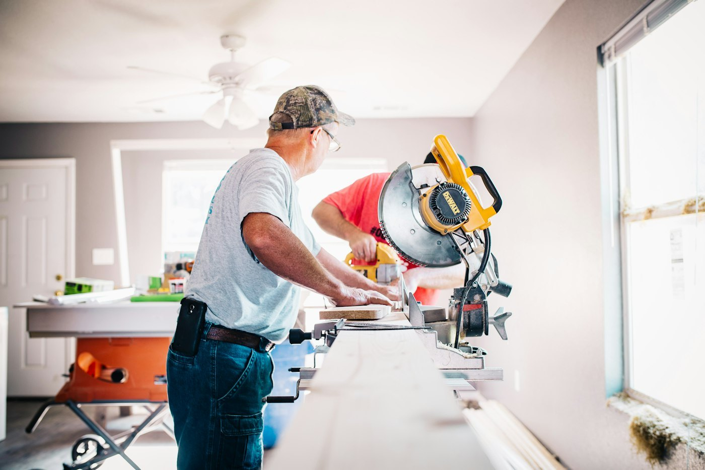

Proudly Serving Brisbane Northside & Moreton Bay
Built on Australian trade integrity, punctuality, and licensed engineering standards to protect your property's plumbing infrastructure.
A Family-Owned Queensland Trade Standard
Waterworks Plumbing Qld was founded with an uncompromising objective: deliver genuine trade craftsmanship without the inflated franchise fees, high-pressure upsells, or unreliable sub-contractors that plague modern service companies.
Over the last two decades, our service vans have logged hundreds of thousands of kilometers across the northern suburbs of Brisbane, from coastal homes in Redcliffe to acreage properties around Caboolture and busy suburban streets in Chermside, Aspley, and Strathpine.
The Four Promises Behind Every Job
Why Brisbane North homeowners, landlords, and builders call Waterworks Plumbing Qld first.
Punctual Arrival
We provide confirmed arrival windows and phone 30 minutes ahead of arrival so you never waste hours waiting around your home.
Fixed Upfront Quotes
You approve the scope before any tools are touched. Strictly zero hidden surprises, travel surcharges, or mystery itemizations on your invoice.
Clean Site Protocol
We treat your property like our own. Our plumbers wear clean protective shoe coverings, lay down work drop cloths, and vacuum the area when done.
Compliance Certificates
Every hot water installation, backflow device, and gas fitting job includes mandatory QBCC Form 4 or gas compliance certification for peace of mind.

Speak Directly to an Experienced Plumber
When you call our direct line, you aren't passed to a distant third-party call center reading from a script. You talk with a knowledgeable tradesman who can guide you on immediate shut-off valves and dispatch a plumber to your doorstep immediately.